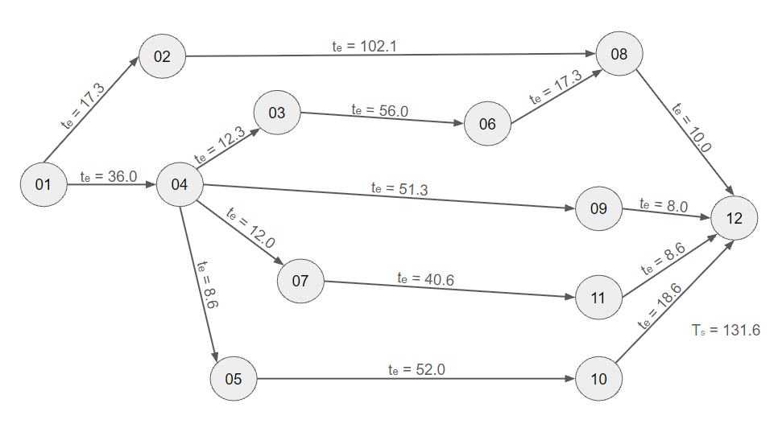

| EVENTO # | SUBTRAÇÃO DOS te’s | TL |
|---|---|---|
| 1 | 7 - 7 | 0 |
| 2 | 16 - 9 | 7 |
| 3 | 27 - 11 | 16 |
| 4 | 31 - 16 | 15 |
| 5 | 31 - 4 | 27 |
| 6 | – | 31 |
| 7 | 27 - 7 | 20 |
Reproduza a seguinte rede, colocando todos os TL’s e TE’s nos lugares apropriados.

Vire para a página 86 para a solução correta.